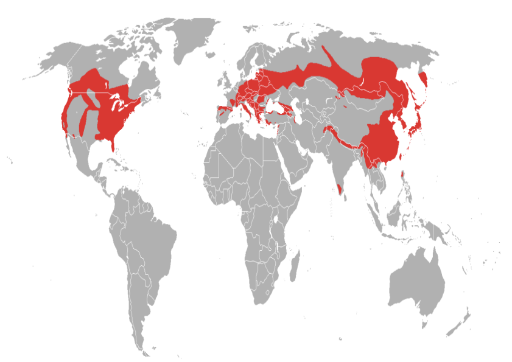

class: center, middle background-image: url(leliesachtergrond.svg) # Lelies --- # Agenda 1. Introductie 2. Geschiedenis 3. Soorten lelies 4. 50 foto's 5. Lelies in eigen tuin 6. Bezwaar tegen middelen 7. Wereldwijde lelie trends 8. Breading research in Nederland 9. Verschillende namen 10. Gebruik van lelies 11. Verspreiding 13. Einde --- # Introductie Ik heb interesse in de lelieveredeling. Mijn familie heeft bijna 60 jaar ervaring in de veredeling en ontwikkeling van hybride lelies. Ik weet er nog weinig van en wil me hierin verdiepen. <br><br> <img width="350" height="250" alt="kas met lelies" src="https://lilylooks.nl/wp-content/uploads/2023/08/proeven-1.jpg"/> --- #Geschiedenis Lelies zijn al duizende jaren aanwezig in het leven van mensen. Je ziet ze terug op oude schilderingen en in mythen die stammen uit de tijd van de Grieken en Romeinen. De lelie stond ooit symbool voor zuiverheid, kracht en liefde. Door de eeuwen heen reisden leliebollen mee met ontdekkingsreizigers, wat zorgde voor verspreiding over alle continenten. <br><br> <a href="https://ishs.org/ishs-article/414_2/">Economische data en opbrengsten van lelies door de jaren heen</a> --- #Soorten lelies De lelie is een van de meest diverse bloem die er bestaat. Je treft ze in verschillende bloemgrootte, kleuren, printen, van niet geurend tot sterk geurend, enkele lelies, dubbele lelies. Al deze lelies zijn te verdelen in verschillende typen, zoals: Aziaat, Oriental, Trompet en Longiflorum. Wil je dieper op de lelie soorten ingaan <br><br> <a href="https://www.royalvanzanten.com/inspirations/lelies-wat-is-wat/">lees dan hier verder</a>. <a href="https://www.gardenia.net/guide/lilies-flowers-from-garden-favorites-to-stunning-arrangements">Lily Flowers: Types, Colors, Symbolism & Bouquets</a> --- background-image: url(leliesschuin.svg) background-size: cover #50 foto's --- #Lelies in eigen tuin Iets wat alle lelies gemeen hebben is dat het allemaal bolbloemen zijn. Heb je intresse in lelies in uw eigen tuin? <br><br> <a href="https://nl-nl.bakker.com/blogs/onze-tips-voor-de-tuin-1/de-lelie-de-bloem-die-uw-tuin-in-een-paradijs-verandert?srsltid=AfmBOorSymuOd6OSXRXVyYRN0-enR72rrUK4JuBPWWKEOoF4fUT3MgnN">Bakker.com</a>, <a href="https://www.chrysal.com/knowledge/flower-type/lily-care-tips">lily care tips</a>, --- #Bezwaar tegen middelen Er is wereldwijd veel bezwaar tegen gebruik van chemische middelen op het land. <br><br> <a href="https://www.trouw.nl/duurzaamheid-economie/waarom-leidt-de-teelt-van-die-mooie-lelie-tot-zoveel-strijd~bbd7a3a4/?referrer=https%3A%2F%2Fwww.google.com%2F">De hoeveelheid lelieteelt in Nederland en bezwaar tegen gebruik van middelen.</a> --- #Wereldwijde lelie trends <a href="https://onings.com/nieuws/lily-league-bevestigt-wereldwijde-trends-met-nieuwe-top-5/">ranking van wereldwijde lelie trends</a> <br><br> 1. Blizzard 2. Touchstone 3. Diantha 4. Strong Love 5. Zambesi --- #breading research in Nederland <a href="https://ishs.org/ishs-article/414_3/">Breeding research in Nederland</a> --- #Verschillende namen Hoe kom je nou op zo'n naam? <br><br> <a href="https://www.royalvanzanten.com/inspirations/lelies-wat-is-wat/">Wat is wat?</a>, <a href="https://www.floricode.com/nl-nl/registreren/algemene-informatie/plantennamen-veranderen">Waar zijn planten namen op gebaseerd?</a>, <a href="https://rhslilygroup.org/hybrid-lilies/">hybride lelies</a> --- #Gebruik van lelies Lelies worden veel gebruikt voor bruiloften, begravenissen, pasen en relegieuse vieringen. --- #Verspreiding Map of the natural distribution of the genus Lilium (Liliaceae) 2012 <p></p> --- #einde Lelies zijn prachtige en elegante bloemen. Ik vind het bijzonder hoe ze met hun uistraling een ruimte een sfeer kunnen geven. Daarnaast ben ik benieuwd naar mijn eigen famillie geschiedenis en al hun ervaringen met lelies.